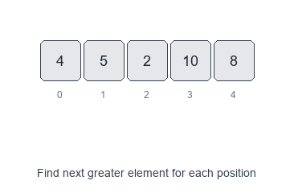
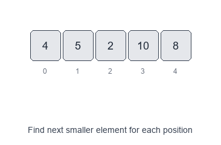

Introduction to Monotonic Stack Pattern
A monotonic stack is a stack that keeps its elements in a monotonic order (either increasing or decreasing). As you scan an array, you pop elements that break the monotonic rule and use those pops to answer questions like:
Visual Examples
Next Greater Element

Next Smaller Element

The monotonic stack helps find:
- the next greater element
- the previous smaller element
- the span/range where an element is the minimum/maximum
This turns many seemingly $O(n^2)$ nested-loop problems into clean $O(n)$ solutions.
When to use
- You need “next/previous greater/smaller” relationships.
- You need to compute spans or ranges (e.g., “how far until a larger value appears?”).
- You need to find, for every index, the nearest index to the left/right satisfying a comparison.
- You’re solving histogram/rectangle or subarray min/max contribution problems.
Common variants
- Monotonic decreasing stack (by value): great for next greater.
- Monotonic increasing stack (by value): great for next smaller.
- Stack of indices (most common): enables distances/spans and referencing original values.
- Circular array variant: iterate
2ntimes usingi % n.
Pattern recipe
- Decide the comparison you need (greater vs smaller) and pick the monotonic direction.
- Use a stack (usually of indices).
- Scan left-to-right (typical for “next to the right”).
- While the stack top breaks monotonicity with the current value:
- pop an index
j - resolve the answer for
jusing the current indexi
- pop an index
- Push the current index.
- After the scan, any indices left in the stack have no valid “next” element (often answer remains
-1).
Complexity
- Time: $O(n)$ — each index is pushed once and popped once.
- Space: $O(n)$ for the stack in the worst case.
Short examples
Next Greater Element (to the right) — Python
def next_greater(nums):
res = [-1] * len(nums)
st = [] # indices, nums[st] is decreasing
for i, x in enumerate(nums):
while st and nums[st[-1]] < x:
res[st.pop()] = x
st.append(i)
return res
Daily Temperatures (days until warmer) — Python
def daily_temperatures(temps):
res = [0] * len(temps)
st = [] # indices, temps[st] is decreasing
for i, t in enumerate(temps):
while st and temps[st[-1]] < t:
j = st.pop()
res[j] = i - j
st.append(i)
return res
Previous Smaller Element (to the left) — Python
def prev_smaller(nums):
res = [-1] * len(nums) # store index of previous smaller
st = [] # indices, nums[st] is increasing
for i, x in enumerate(nums):
while st and nums[st[-1]] >= x:
st.pop()
res[i] = st[-1] if st else -1
st.append(i)
return res
Practical tips
- Use indices when you need distances (spans), boundaries, or to write results at positions.
- Be precise with strict vs non-strict comparisons:
- For “next greater”, you usually pop while
<. - For “next greater or equal”, pop while
<=. - For “subarray minimum contributions”, tie-breaking (
<vs<=) matters a lot.
- For “next greater”, you usually pop while
Problems to practice